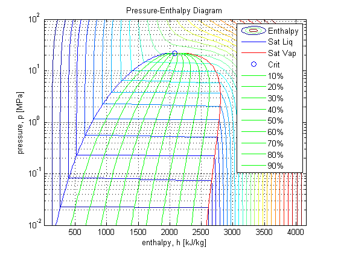

IAPWS_IF97 Example
Contents
initialize workspace
close('all'),clear('all'),clc
Pressure and temperature ranges
press_rng = logspace(-2,2,300); % [MPa] pressure (p) range temp_rng = 273.15+linspace(1,800,300); % [K] temperature (T) range
Calculate enthalpy
[p,T] = meshgrid(press_rng,temp_rng); % [MPa,K] mesh p & T h = IAPWS_IF97('h_pT',p,T); % [kJ/kg] enthalpy = f(p,T)
Inside the vapor dome
psat = IAPWS_IF97('psat_T',temp_rng); % [MPa] saturation pressure psat = psat(~isnan(psat)); % trim out of range temperatures hLsat = IAPWS_IF97('hL_p',psat); % [kJ/kg] saturated liquid enthalpy hVsat = IAPWS_IF97('hV_p',psat); % [kJ/kg] saturated vapor enthalpy pcrit = 22.064; % [MPa] critical pressure hLcrit = IAPWS_IF97('hL_p',pcrit);hVcrit = IAPWS_IF97('hV_p',pcrit); Tcrit = IAPWS_IF97('Tsat_p',pcrit); hcrit = IAPWS_IF97('h_pT',pcrit,Tcrit); hVL = hVsat - hLsat; % [kJ/kg] heat of vaporization hX = hLsat*ones(1,9) + hVL*(0.1:0.1:0.9); % [kJ/kg] mixture enthalpy
plot
contour(h,p,T,25) % contour plot % format plot set(gca,'YScale','log'),grid,hold('all') title('Pressure-Enthalpy Diagram'), xlabel('enthalpy, h [kJ/kg]'),ylabel('pressure, p [MPa]') plot([hLsat;hLcrit],[psat;pcrit],'b', ... [hVsat;hVcrit],[psat;pcrit],'r', ... hcrit,pcrit,'o', ... hX,psat*ones(1,9),'g') % vapor dome vapdome_leg = cellstr([num2str((1:9)'*10),repmat('%',9,1)]); % vapor dome legend legend('Enthalpy','Sat Liq','Sat Vap','Crit',vapdome_leg{:}) % legend
Compare against XSteam
To run this test download XSteam from the FileExchange first.
% test IAPWS_IF97 Ntest = 30;fprintf('Test IAPWS_IF97 %d times...\n',Ntest) testTime = zeros(Ntest,1); for test = 1:Ntest tic,h_test = IAPWS_IF97('h_pT',p,T);testTime(test) = toc; end IAWPS_IF97_avg_time = mean(testTime); fprintf('IAPWS_IF97 avg time: %f\n\n',IAWPS_IF97_avg_time) % test XSteam pBar = p*10; % convert to bar TCelsius = T-273.15; % convert to C h_idx = nan(size(pBar)); Ntest = 3;fprintf('Test XSteam %d times...\n',Ntest) testTime = zeros(Ntest,1); tic for test = 1:Ntest for idx = 1:numel(pBar) h_idx(idx) = XSteam('h_pT',pBar(idx),TCelsius(idx)); end testTime(test) = toc; end XSteam_avg_time = mean(testTime); fprintf('XSteam avg time: %f\n\n',mean(testTime)) % speed increase fprintf('IAPWS_IF97 is %fX faster than XSteam.\n\n', ... XSteam_avg_time/IAWPS_IF97_avg_time) % average relative difference h_err = (h_test-h_idx)./h_test; h_nan = isnan(h_err); % trim disagreements on valid ranges @ (0.1bar,46C) & (0.25bar,65C) h_err = h_err(~h_nan);pBar = pBar(~h_nan);TCelsius = TCelsius(~h_nan); [errmax,idx] = max(h_err(:)); fprintf('Max difference: %f%% at (%f[bar],%f[C])\n',errmax*100,pBar(idx),TCelsius(idx)) [errmin,idx] = min(h_err(:)); fprintf('Min difference: %f%% at (%f[bar],%f[C])\n',errmin*100,pBar(idx),TCelsius(idx)) fprintf('RMS difference: %f%%\n', 100*sqrt(mean(h_err(:).^2)))
Test IAPWS_IF97 30 times... IAPWS_IF97 avg time: 0.706895 Test XSteam 3 times... XSteam avg time: 11.982746 IAPWS_IF97 is 16.951248X faster than XSteam. Max difference: 0.026006% at (265.918874[bar],385.802676[C]) Min difference: -0.049508% at (221.045463[bar],375.113712[C]) RMS difference: 0.000806%